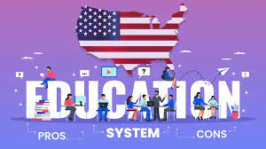

Education is mandatory until age 16 (18 in some states). The government provides free public education through high school. In Arkansas, kids typically go to school from mid-August through mid-May.
Because Children International partners with the school district in Little Rock, our sponsored children are typically enrolled in school. But impoverished children in Arkansas face other barriers to education:
Increased child hunger. When kids are hungry, they can’t learn and are more likely to have behavioral problems and worse overall health outcomes. In Arkansas, 23.2% of kids are food-insecure.
Lack of stable housing. Research shows a lack of stable housing can be harmful to children’s physical and mental health, their ability to succeed in school, and may increase their likelihood of juvenile delinquency.
Less access to quality early education. This puts them at a disadvantage compared to their more affluent peers.
If students aren’t able to catch up to their peers’ reading skills by third grade, they are four times more likely to drop out before graduating high school.